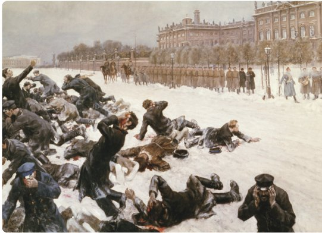
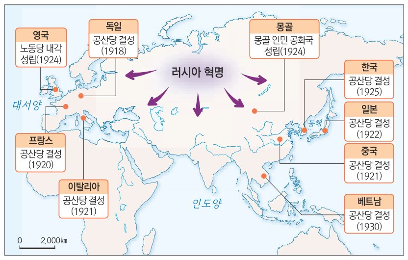
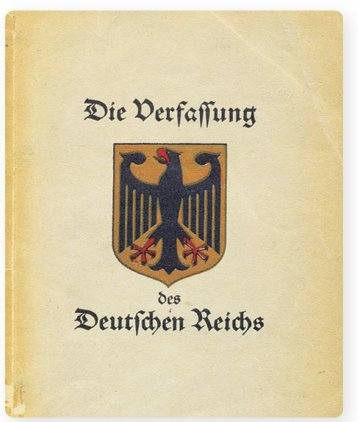
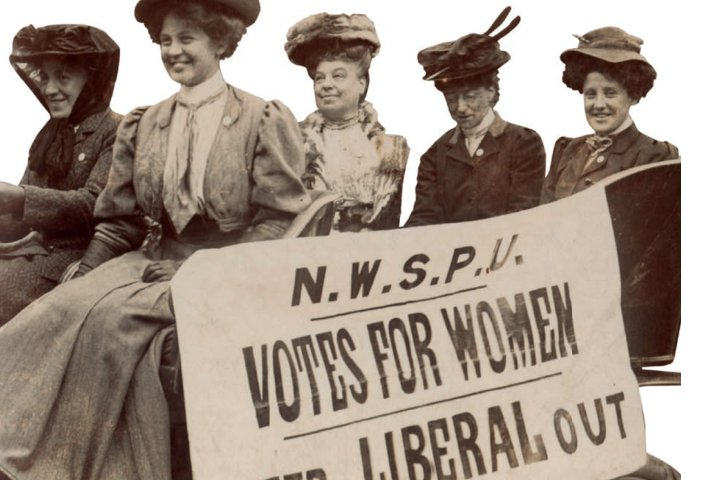

유럽 각국의 정치 체제가
변화하다
제1차 세계 대전은 전쟁터만 바꾼 것이 아니었습니다. 러시아에서는 황제가 쫓겨나고 세계 최초의 사회주의 국가가 세워졌고, 유럽 곳곳에서는 민주주의와 참정권이 넓어졌습니다. 전쟁은 사람들이 나라를 다스리는 방식을 어떻게 바꾸었을까요?
- 1러시아 혁명의 전개 과정을 설명할 수 있다.
- 2제1차 세계 대전 이후 유럽의 정치적 변화를 파악할 수 있다.
러시아, 독일
러시아 혁명, 바이마르 공화국 수립
1905년 1월, 눈 내린 광장에서

19세기 무렵 러시아는 차르(황제)가 다스리는 나라였습니다. 농업 중심의 경제 체제를 유지하면서 급속한 산업화를 겪고 있었지요. 그런데 러일 전쟁으로 생활이 어려워진 노동자들이 개혁을 요구하는 시위를 벌이자, 정부군이 총을 쏘아 많은 사람이 목숨을 잃었습니다.
생각을 쓴 뒤 열어 보기
두 번의 혁명, 1917년 3월과 11월
- 배경
- 제1차 세계 대전으로 인한 인명 피해와 경제난
- 과정
- 노동자들이 식량 배급, 전쟁 중지, 차르 타도 등을 외치며 시위 → 노동자와 군인들이 소비에트를 결성 → 차르를 몰아내고 임시 정부 수립
- 배경
- 임시 정부가 전쟁을 계속하고 개혁을 진행하지 않음
- 과정
- 레닌이 이끄는 볼셰비키가 임시 정부를 무너뜨림 → 소비에트 정부 수립
문장을 읽고 어느 혁명에 해당하는지 고르세요. 처음 고른 답으로 점수를 셉니다.
노동자들이 식량 배급, 전쟁 중지, 차르 타도를 외치며 시위를 벌였다.
레닌이 이끄는 볼셰비키가 정부를 무너뜨렸다.
차르가 쫓겨나고 임시 정부가 세워졌다.
임시 정부가 전쟁을 계속하고 개혁을 미룬 것에 반발하여 일어났다.
노동자와 군인들이 소비에트를 결성하여 차르를 몰아냈다.
그 결과 소비에트 정부가 세워졌다.
가장 먼저 일어난 일부터 차례로 누르세요. 틀리면 카드가 흔들립니다.
레닌과 스탈린, 소련을 만들다
- 레닌소비에트 정부는 독일과 서로 공격하지 않겠다는 조약을 맺고 전쟁을 멈추었다.
- 레닌토지와 산업을 국가가 직접 소유하고 관리하는 사회주의 개혁(국유화)을 추진하였다.
- 레닌경제적 어려움이 심해지자 자본주의 요소를 일부 도입한 신경제 정책(NEP)을 펼쳤다.
- 1922여러 소비에트 정부를 묶어 소비에트 사회주의 공화국 연방(소련)을 세웠다.
- 스탈린레닌의 뒤를 이어 농업의 집단화, 중공업 중심의 경제 개발 5개년 계획을 추진하였다. 또한 반대파를 탄압하며 공산당 독재 체제를 강화하였다.
각 정책을 추진한 지도자를 고르세요. 처음 고른 답으로 점수를 셉니다.
자본주의 요소를 일부 도입한 신경제 정책(NEP)
농업의 집단화
여러 소비에트 정부를 묶어 소련 수립(1922)
중공업 중심의 경제 개발 5개년 계획
토지와 산업을 국가가 직접 소유하고 관리하는 사회주의 개혁
반대파를 탄압하며 공산당 독재 체제 강화

황제 대신 헌법, 소수 대신 모두의 투표
바이마르 공화국 수립(1919)
제1차 세계 대전이 끝나기 직전 혁명이 일어나 독일 제국이 무너졌다. 이후 독일 의회는 바이마르 헌법을 만들고 바이마르 공화국 수립을 널리 알렸다.
해체 → 여러 민주 공화국
제1차 세계 대전 이후 해체된 오스트리아·헝가리 제국에서는 여러 민주 공화국이 탄생하였다.
폴란드, 체코슬로바키아 등
민족 자결주의 원칙에 따라 독립하였다. 새롭게 등장한 독립국은 대부분 민주주의 헌법을 채택하였다.

참정권이 넓어지다
제1차 세계 대전에 참여한 사람들은 전쟁이 끝난 뒤 자신들의 정치적 권리를 요구하였습니다. 또한 새로 생긴 나라들이 대부분 민주주의를 택하면서 재산이나 성별에 따른 선거권 제한이 점차 사라지고, 세계 각국에 보통 선거가 자리를 잡게 되었습니다.
제1차 세계 대전(1914~1918)이 끝날 무렵과 그 뒤에 여성 참정권을 인정한 나라가 많다는 점을 살펴보세요.
교과서에 나온 여성 참정권이 확대된 배경을 모두 고른 뒤 확인하기를 누르세요.

영국 영화 「서프러제트」는 20세기 초 영국에서 여성 참정권을 얻으려고 노력한 ‘서프러제트’ 집단의 이야기입니다. 이들은 언론 이용, 선전, 시위, 단식 농성 등으로 여성 참정권을 요구하였습니다.
영화에서 지도자로 나오는 팽크허스트는 실제로 여성 참정권 운동을 이끌었던 인물입니다. 의회에 청원하고 연설 활동을 하였으며, 집회를 주도하고 무력 시위를 하여 정부의 탄압을 받기도 하였습니다.
📰 카드 뉴스: 제1차 세계 대전과 여성 참정권 (비바샘)배운 내용을 확인해요
1. 1905년 개혁을 요구하는 노동자들에게 정부군이 발포하여 많은 사람이 목숨을 잃은 사건은 이다.
2. 3월 혁명 때 노동자와 군인들은 대표자 회의인 을/를 결성하여 차르를 몰아냈다.
3. 볼셰비키가 임시 정부를 무너뜨리고 소비에트 정부를 세운 혁명은 이다.
4. 레닌의 뒤를 이은 은/는 농업의 집단화, 중공업 중심의 경제 개발 5개년 계획을 추진하였다.
5. 1919년에 제정된 것으로 노동자의 권리와 여성의 참정권을 보장한 독일의 헌법은 이다.
6. 폴란드, 체코슬로바키아 등은 원칙에 따라 독립하였다.
1. 3월 혁명으로 차르가 물러나고 임시 정부가 세워졌다.
2. 레닌은 경제가 어려워지자 자본주의 요소를 모두 없앤 신경제 정책(NEP)을 펼쳤다.
3. 1922년 여러 소비에트 정부를 묶어 소련이 세워졌다.
4. 제1차 세계 대전 후 새로 독립한 나라들은 대부분 사회주의 헌법을 채택하였다.
5. 제1차 세계 대전 이후 많은 국가가 여성 참정권을 인정하기 시작하였다.
오늘 배운 변화, 내 말로 정리하기
예시 답안 보기
예시 답안 보기
1929년, 미국 뉴욕에서 시작된 경제 위기가 세계를 뒤흔듭니다. 다음 시간에는 제2차 세계 대전의 배경(대공황과 전체주의, 교과서 191~192쪽)을 배웁니다.
도입 생각(STEP 1), 활동 1~4 결과, 빈칸·O/X 점수, 서술형 두 개가 한 번에 제출됩니다. 선생님 화면에 바로 나타나요. 고쳐서 다시 제출해도 괜찮아요(마지막 제출을 기준으로 봅니다).